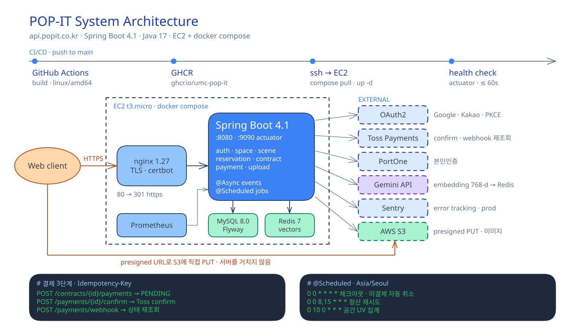

비어 있는 상업 공간과 팝업스토어를 여는 브랜드를 잇는 중개 플랫폼입니다. 공간을 가진 호스트가 자리를 등록하면, 브랜드가 기간을 골라 예약하고 계약과 정산까지 한 서비스 안에서 끝냅니다. 연합동아리 UMC 10기에서 12명이 파트를 나눠 한 학기 동안 만들었고, 저는 백엔드에서 사용자 도메인(회원 가입 · 소셜 로그인 · 인증 · 사용자별 에셋)을 맡았습니다. 또한 PR · 이슈 템플릿을 도입하고 리뷰 규칙을 함께 정해, 모든 파트가 같은 규칙 아래에서 코드를 합치도록 했습니다.
- 기간
- 2026.03 — 2026.08
- 역할
- 백엔드 · 사용자 도메인 (회원 가입 / 소셜 로그인 / 인증) · 협업 환경 구성
- 팀
- 팝잇 · 12명 (백엔드 5명 · 프론트엔드 4명)
- 스택
- Java 17, Spring Boot 4.1, Spring Security, OAuth 2.0 (Google · Kakao), JWT, JPA, MySQL, AWS EC2 · S3
- 협업
- Git Flow · PR 2인 승인 후 머지 · CodeRabbit AI 리뷰
- 성과
- UMC 10th DEMO DAY 대상
Problem
팝업스토어 자리를 구하는 일은 지금도 대부분 사람이 직접 붙어서 합니다. 브랜드는 부동산과 지인을 거쳐 빈 공간을 수소문하고, 공간을 가진 쪽은 짧게 빌려 줄 상대를 찾지 못해 몇 달을 비워 둡니다. 양쪽이 만나도 기간 · 금액 · 원상복구 조건을 문서로 다시 맞춰야 하므로 계약까지 시간이 오래 걸립니다.
거래 금액이 크고 기간이 짧은 탓에 신뢰 문제도 같이 따라옵니다. 선입금 후에 공간이 취소되거나, 반대로 브랜드가 나타나지 않는 경우를 서비스가 감당해야 했습니다.
Approach
도메인을 먼저 쪼갠 뒤에 코드를 썼습니다. 공간 · 예약 · 계약 · 정산 · 결제 · 이용권 · 찜 · 사용자를 각각 독립된 패키지로 두고, 패키지 사이는 서비스 인터페이스로만 호출합니다. 다섯 명이 동시에 작업해도 같은 파일에서 충돌하지 않게 만드는 것이 목적이었습니다.
돈이 오가는 구간은 에스크로로 묶었습니다. 결제 금액을 서비스가 보관하다가 이용이 끝난 뒤에 호스트에게 정산합니다. 예약 상태와 정산 상태를 따로 두어, 예약이 취소되어도 이미 일어난 결제 기록은 지워지지 않습니다.
일하는 방식도 코드보다 먼저 맞췄습니다. 파트별 깃허브 컨벤션 회의에서 브랜치 전략과 커밋 · PR 규칙을 정하고, 모든 변경은 PR과 코드 리뷰를 거쳐야만 통합 브랜치에 합쳐지도록 했습니다.
Result
공간 등록부터 예약 · 계약 · 정산까지 이어지는 전 구간을 AWS EC2에 올려 데모데이에서 시연했습니다. 프론트엔드 네 명이 붙은 웹 클라이언트와 같은 API를 사용합니다.
NE(O)RDINARY 너디너리 페스티벌에서 열린 연합동아리 UMC 10th DEMO DAY에서 대상을 받았습니다.

Implementation
소셜 로그인과 회원 가입
구글 · 카카오 OAuth 2.0 로그인을 붙이고, 처음 들어온 사용자는 소셜 로그인 과정에서 바로 회원 가입이 이루어지게 했습니다. 이메일 가입과 소셜 로그인은 하나의 사용자 테이블로 받고, 같은 사람이 두 경로로 들어와도 계정이 갈라지지 않도록 이메일을 기준으로 묶었습니다. 인증이 끝나면 JWT를 발급하므로, 이후 요청에서는 서버가 세션을 들고 있지 않습니다.
비밀번호 단방향 해시 저장
이메일로 가입할 때 받은 비밀번호는 평문으로 저장하지 않습니다.
Spring Security의 PasswordEncoder(BCrypt)로 솔트를 더한 단방향 해시만 남기고,
로그인할 때는 입력값을 저장된 해시와 대조합니다. 데이터베이스가 유출되더라도 원래 비밀번호를 되돌릴 수 없게 하기 위해서입니다.
테스트 계정 토큰으로 전체 API 검증
소셜 로그인은 브라우저 리다이렉트를 거쳐야 해서, 인증이 필요한 API를 확인할 때마다 로그인 절차를 밟기가 번거로웠습니다. 그래서 테스트 계정용 액세스 토큰을 발급하는 기능을 만들고, 이 토큰으로 배포된 API 서버에서 전체 API를 직접 호출해 검증했습니다. 프론트엔드 연동을 기다리지 않고도 인증이 걸린 API까지 백엔드에서 먼저 확인할 수 있었습니다.
사용자별 에셋 관리
EC2 환경에서 사용자가 올린 파일(에셋)을 사용자 단위로 구분해 관리했습니다. 에셋을 사용자 계정에 묶어 두어, 누가 올린 파일인지 추적할 수 있고 계정 단위로 조회하고 정리할 수 있습니다.
도메인별 패키지 분리
domain 아래에 space · reservation · contract · escrow · payment · pass ·
wishlist · facility · user 패키지를 두고, 공통 설정과 예외 처리는 global로 모았습니다.
담당이 나뉘어 있어 병합 충돌이 거의 없었고, 리뷰할 때 볼 범위도 좁아졌습니다.
에스크로 정산
결제는 즉시 호스트에게 가지 않습니다. 서비스가 금액을 보관하다가 이용 종료 뒤에 넘깁니다. 예약 · 결제 · 정산이 각각의 상태를 갖기 때문에, 중간에 취소가 끼어들어도 어느 단계까지 진행됐는지가 기록에 남습니다.
Collaboration
열두 명이 파트별로 나뉘어 동시에 움직였고, 백엔드만 해도 다섯 명이 한 저장소를 함께 썼습니다. 각자 잘 짜는 것보다 같은 규칙으로 합치는 일이 더 중요했기 때문에, 코드가 합쳐지는 과정 자체를 먼저 설계했습니다.
컨벤션 회의와 Git Flow
개발을 시작하기 전에 파트별로 깃허브 컨벤션 회의를 열어 브랜치 전략, 브랜치 · 커밋 메시지 이름 규칙,
이슈와 PR 작성 방식을 정했습니다. 브랜치는 Git Flow를 따라 배포용 main,
통합용 develop, 기능별 feature 브랜치로 나눴습니다.
main 배포 브랜치 — 배포 서버에 올라가는 코드 develop 통합 브랜치 — 리뷰를 통과한 기능이 모이는 곳 feature/* 이슈 단위 작업 브랜치 — 작업이 끝나면 develop으로 PR
PR · 이슈 템플릿 도입
PR과 이슈 템플릿은 제가 저장소에 추가했습니다. 작업 배경, 변경 사항, 확인 방법처럼 매번 적어야 할 항목을 틀로 정해 두어, 누가 올리든 같은 형식으로 읽히고 리뷰어가 맥락을 따로 묻지 않아도 되도록 했습니다. PR이 관련 이슈를 가리키게 해서 작업 이력도 이슈 단위로 따라갈 수 있습니다.
2인 이상 승인 후 머지
모든 PR은 두 명 이상이 코드 리뷰로 승인해야 머지할 수 있도록 규칙을 정했습니다. 리뷰를 거치지 않은 코드가 통합 브랜치에 섞이지 않고, 한 사람이 맡은 도메인도 최소 두 명은 내용을 알게 됩니다.
CodeRabbit 리뷰 봇
사람의 리뷰 앞단에는 AI 코드 리뷰 봇 CodeRabbit을 두었습니다. PR이 올라오면 봇이 먼저 변경 요약과 놓치기 쉬운 버그 · 컨벤션 위반을 짚고, 팀원은 설계와 도메인 로직처럼 사람이 판단해야 하는 부분에 리뷰를 집중했습니다.
Retrospect
- 열두 명이 움직이는 프로젝트에서는 코드보다 경계를 먼저 정하는 쪽이 훨씬 빨랐습니다.
- 협업 규칙은 코드처럼 처음에 정하고, 템플릿과 리뷰 규칙으로 흐름에 녹여 두어야 끝까지 지켜진다는 것을 배웠습니다.
- 인증은 기능 자체보다, 두 경로로 들어온 같은 사람을 하나로 묶는 규칙을 정하는 일이 어려웠습니다.
- 소셜 로그인처럼 외부 절차가 끼는 기능은 테스트 토큰 같은 검증 경로를 먼저 마련해 두어야 개발 속도가 난다는 것을 알게 됐습니다.
- 돈이 걸린 흐름은 성공 경로보다 취소 · 환불 경로를 먼저 그려야 한다는 것을 배웠습니다.
- 남은 과제는 테스트 코드와 배포 자동화입니다. 데모데이 일정에 밀려 수동 배포로 마감했습니다.